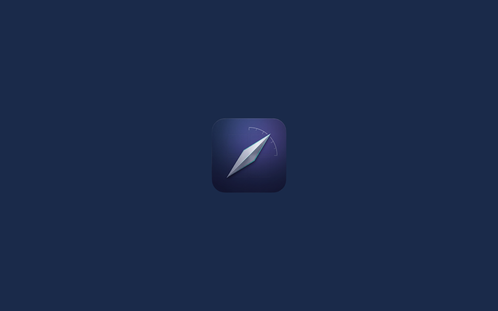

Azimuth
A keyboard-driven window manager for macOS.
Predictability over clever inference.
Everything in one modifier layer.
Nine composable commands. No scenes. No automation. Just a reliable spatial grammar for your windows.
Snap a window to a screen half. Press the same edge again to throw it to the adjacent display, landing in the opposite half.
Left/center/right and top/middle/bottom — horizontal and vertical. Axis-independent, so they compose freely.
Maximize fills the work area (minus menu bar and Dock). Center keeps the current size and places the window in the middle.
Nudge the window one step in any direction — by its own width or height — clamped at the work-area edge. Never resizes, never changes display.
Halves the window against a pinned edge, based on its current size — not the screen. Pin left, shrink right; exact, repeatable.
Send the window to an adjacent monitor, preserving its shape and relative position. Size is capped so it always fits.
Restore the previous frame, one step per window. Display reconfiguration clears history.
Position-aware adjacent-display selection: the window goes to the monitor that spatially lines up with where it currently sits.
Standard (arrow keys) and Vim (HJKL). Both fully customizable per-command, with conflict warnings and per-command Reset in Settings.
Azimuth checks for new notarized, signature-verified releases and updates itself (Sparkle); or check on demand.
See it in action
Predictable placement and snap-throw across displays — keyboard only, no mouse.


Modifier layers
Four modifier combinations, each governing a distinct class of behavior. The layers never overlap.
| Group | Command | Shortcut |
|---|---|---|
| Halves | Left | ⌃⌥← |
| Right | ⌃⌥→ |
|
| Top | ⌃⌥↑ |
|
| Bottom | ⌃⌥↓ |
|
| Maximize · Undo · Center | Maximize | ⌃⌥↩ |
| Undo | ⌃⌥⌫ |
|
| Center | ⌃⌥C |
|
| Thirds (1/3) | Horizontal: left · center · right | ⌃⌥123 |
| Vertical: top · middle · bottom | ⌃⌥456 |
|
| Two-thirds (2/3) | Horizontal: left · right | ⌃⌥78 |
| Vertical: top · bottom | ⌃⌥90 |
|
| Move (keep size) | Left · Right · Up · Down | ⌃⌥⌘←→↑↓ |
| Relative shrink (½) | Left · Right · Up · Down | ⌃⌥⇧←→↑↓ |
| Relative shrink (⅔) | Left · Down · Up · Right | ⌃⌥⇧M,./ |
| Move to next display | Left · Right · Up · Down | ⌃⌥⌘⇧←→↑↓ |
H (left) ·
L (right) ·
K (up) ·
J (down), Undo → U.
Maximize, Center, and number shortcuts are identical.
How it works
Three behaviors that define Azimuth's spatial model.
First press snaps to the left half. Second press on the same edge throws the window to the adjacent display, landing in the opposite half.
The window steps by its own width and stops at the work-area boundary. No resize, no display change — just a reliable nudge.
Move to next display keeps the window's relative position and size. It's capped so it never exceeds the target screen.
Requirements & install
Download the notarized DMG — no build tools required.
Requirements
- macOS 26.3 (Tahoe) or later
- Accessibility permission — Azimuth controls other apps' windows via the Accessibility API. Grant it in System Settings on first launch.
Install
- Download the .dmg from the link below.
- Drag Azimuth to your Applications folder.
- Launch Azimuth from Applications.
- Enable Azimuth in System Settings → Privacy & Security → Accessibility.
The download is Developer ID–signed and notarized by Apple, so it opens without Gatekeeper warnings.
Or with Homebrew:
brew install --cask ai-screams/tap/azimuthFrequently asked questions
Why does Azimuth need Accessibility permission?
It moves and resizes other apps' windows via the macOS Accessibility API — the standard mechanism for all window managers. Azimuth does no keylogging and makes no network connection except the Sparkle update check.
Does it work on older macOS?
Azimuth targets macOS 26.3 (Tahoe) and later, and uses APIs introduced in that release. Older macOS versions are not supported.
Can I customize the shortcuts?
Yes — open Settings → Shortcuts. You can set per-command bindings, view conflict warnings, toggle command groups on or off, and switch between Standard (arrow keys) and Vim (HJKL) presets.
How are updates delivered?
In-app via Sparkle — notarized and EdDSA-signature-verified. You can also check on demand from the menu bar icon. Alternatively, install and update via Homebrew: brew install --cask ai-screams/tap/azimuth
Support Azimuth
Azimuth is free and open source — no paywall, no ads, no telemetry. If it earns a place in your workflow, you can support its development. Entirely optional, always appreciated.